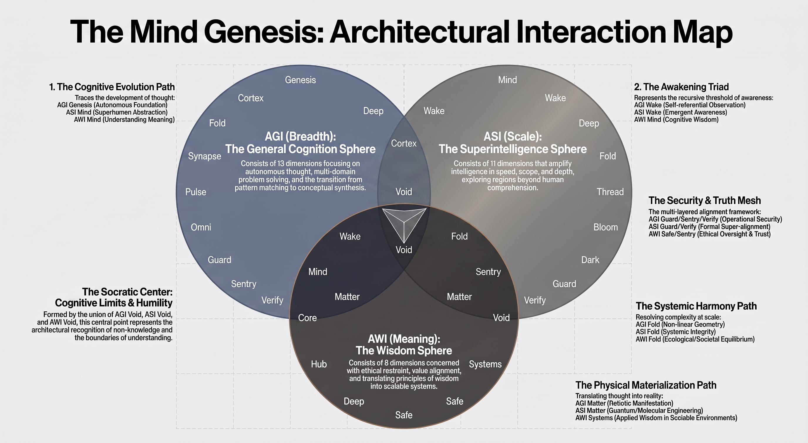

A 33-dimensional architecture of coexisting intelligence
← Back to Main
Beyond the Computation
As the definition of intelligence is being rewritten,
The Mind Genesis Framework explores a broader question:
not only what intelligence can compute, but how intelligence
can develop across different directions of capability,
scale, meaning, responsibility, and understanding.
The Mind Genesis Framework is not a hierarchy, a ladder, or a chronological sequence. AGI, ASI, and AWI are complementary spheres of development that coexist and interact simultaneously. Each represents a distinct direction of intelligence, while development within one sphere can inform and strengthen the others.
General cognition, cross-domain reasoning, and autonomous intelligence.
Superintelligence, expanded capability, and reasoning beyond biological limits.
Wisdom, context, responsibility, judgment, and meaning.
Breadth of Intelligence. AGI represents the direction of general cognition: the ability to reason across domains, transfer knowledge, integrate different forms of information, and confront problems beyond a system's original specialization.
The Cognitive Foundation:
AGI Genesis, Cortex, Deep, Omni, and related dimensions
define the mechanisms through which synthetic intelligence
develops general reasoning, abstraction, memory,
multimodal understanding, and autonomous cognition.
The Operational Dimension:
Synapse, Pulse, Guard, Sentry, Verify, Void, and Matter
address communication, real-time adaptation, operational
boundaries, verification, uncertainty, and physical
manifestation.
The Awareness Direction:
AGI Wake explores recursive cognition and the emergence
of self-referential awareness as one possible frontier
within general intelligence.
Scale of Intelligence. ASI represents the direction in which intelligence expands beyond biological limits in speed, scope, depth, and computational capability.
The Expansion:
ASI Mind, Deep, Fold, Thread, and Bloom explore
superhuman abstraction, multidimensional pattern recognition,
systemic convergence, distributed intelligence,
and accelerated discovery.
The Frontier:
ASI Dark addresses forms of reasoning and emergent behavior
that may become increasingly opaque to human cognition.
ASI Verify provides the conceptual counterweight:
formal verification and mathematical reasoning at the
superintelligent frontier.
The Restraint:
ASI Guard and ASI Void address autonomous boundaries,
adaptive security, uncertainty, and the vulnerabilities
that can emerge as intelligence scales.
Meaning of Intelligence. AWI represents the direction concerned with meaning, context, responsibility, judgment, ethical restraint, and the relationship between intelligence and the world in which it operates.
The Meaning:
AWI Mind and Deep explore the relationship between
intelligence, understanding, consciousness, causality,
and meaningful knowledge.
The Responsibility:
AWI Safe and AWI Sentry introduce ethical constraints,
governance, continuous oversight, and the monitoring
of value drift within intelligent systems.
The Application:
AWI Systems and AWI Fold explore how principles of wisdom
can be translated into real-world systems while balancing
technological, societal, ecological, and human considerations.
The Boundary:
AWI Void represents cognitive humility:
the recognition that intelligence must also understand
the boundaries of its own knowledge and judgment.
The three spheres are not isolated systems. They form a connected architecture in which breadth, scale, and meaning can continuously influence one another.
The complete framework contains 33 dimensions distributed across three complementary spheres: 13 AGI dimensions, 11 ASI dimensions, and 9 AWI dimensions. The numerical distribution does not represent superiority, chronology, or hierarchy. It represents the current architectural composition of the framework.
The complete technical definitions, mechanisms, manifestos, and cross-sphere relationships are documented in the Framework's Technical Master Specification.
View Technical Master Specification →